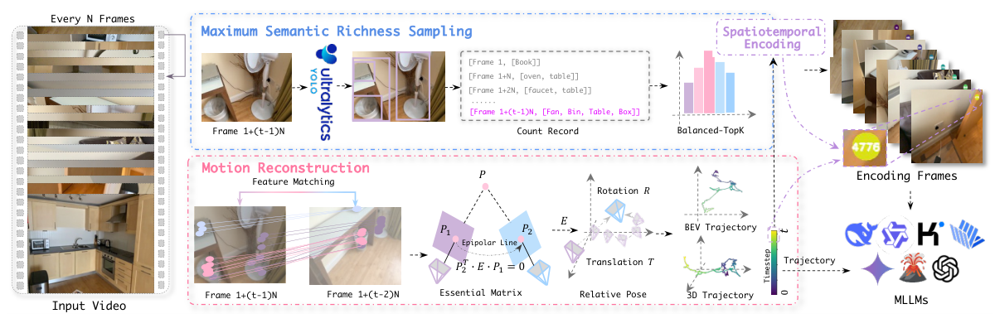
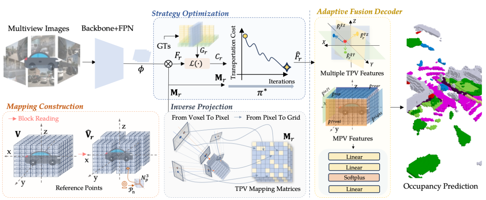
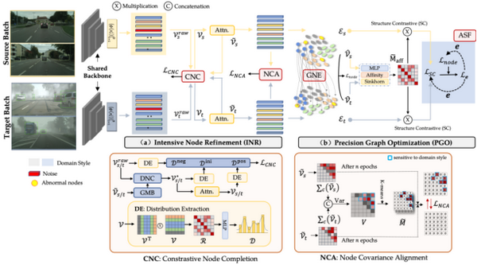
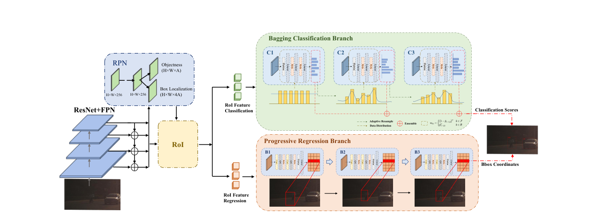
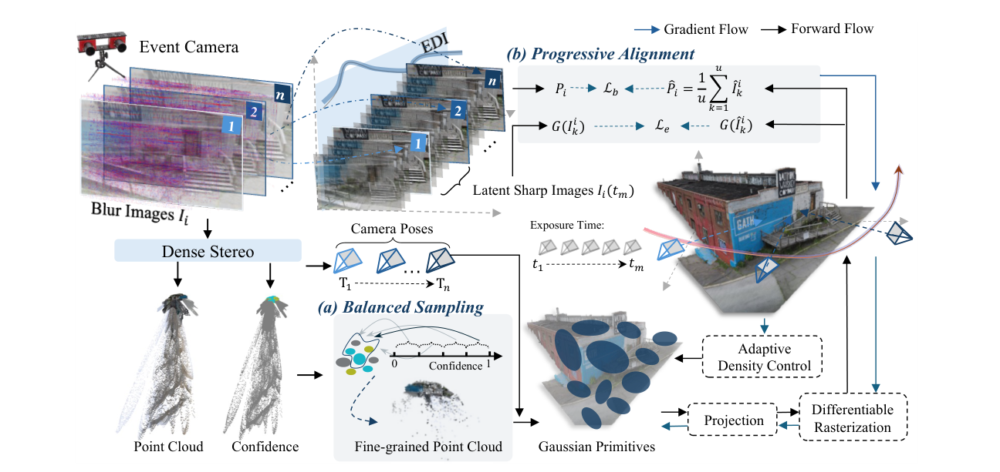

Co-led spatial-memory research for out-of-vision robot manipulation.
About Me
I am a Ph.D. candidate in Computer Science at The Hong Kong University of Science and Technology (Guangzhou), advised by Prof. Hui Xiong. I am also a Research Intern and Co-Lead of core VLA research at AI² Robotics.
My research focuses on Embodied AI, particularly Vision-Language-Action models, spatial perception, understanding, and modeling. I aim to build generalizable robot intelligence that can remember, reason, and act reliably in real-world environments.
WeChat:
Education
HKUST (Guangzhou)Ph.D. in Computer ScienceArtificial Intelligence Thrust · Advisor: Prof. Hui XiongSep. 2024 – Jul. 2027 (expected)
Shenzhen UniversityM.Sc. in Computer Science · GPA 3.63/4.0 · Top 1%Advisor: Prof. F. Richard YuSep. 2021 – Jun. 2024
Industry
AI² RoboticsResearch Intern · Co-Lead, Core VLA ResearchCo-Founder, AlphaBrain PlatformMay 2025 – Present
Tencent Youtu LabComputer Vision Algorithm InternJan. 2024 – Apr. 2024
Guangming LaboratoryAlgorithm Engineer / Research InternAug. 2022 – Dec. 2023
Honors & Awards
- Outstanding Graduate, Shenzhen University2024
- National Scholarship, Ministry of Education2023
- Reviewer for CV, robotics, and ML venuesOngoing
Research Interests
- Vision-Language-Action Models
- Embodied AI & Robot Learning
- Spatial Memory & World Models
- 3D and Event-based Perception
News
2026
SOMA is accepted to ICML 2026.
AlphaBrain reaches 180+ GitHub stars.
2025
See&Trek is accepted to NeurIPS 2025.
Joined AI² Robotics as a Research Intern.
2024
Implicit Grasp Diffusion is accepted to CoRL 2024.
Robot Trajectron is accepted to ICRA 2024.
Selected Publications (view all )

[NeurIPS 2025] See&Trek: Training-Free Spatial Prompting for Multimodal Large Language Models
Pengteng Li, Pinhao Song, Wuyang Li, Huizai Yao, Weiyu Guo, Yijie Xu, Dugang Liu, Hui Xiong

[IJCAI 2024] OTOcc: Optimal Transport for Occupancy Prediction
Pengteng Li, Ying He, F. Richard Yu, Pinhao Song, Xingchen Zhou, Guang Zhou

[ACM MM 2023] IGG: Improved Graph Generation for Domain Adaptive Object Detection
Pengteng Li, Ying He, F. Richard Yu, Pinhao Song, Dongfu Yin, Guang Zhou

[ICASSP 2023] Bagging R-CNN: Ensemble for Object Detection in Complex Traffic Scenes
Pengteng Li, Ying He, Dongfu Yin, F. Richard Yu, Pinhao Song

[TMM 2026] DeblurSplat: SfM-Free 3D Gaussian Splatting with Event Camera for Robust Deblurring
Pengteng Li, Y. Lu, Pinhao Song, W. Guo, Huizai Yao, F. Richard Yu, Hui Xiong